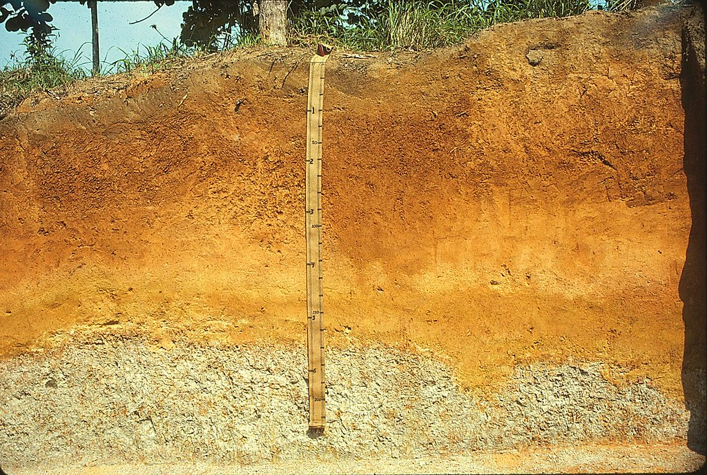

Expansive Clay Foundation Problems
Expansive clay foundation problems happen because clay soil changes volume with moisture: it swells as it absorbs water and shrinks as it dries, so a foundation resting in it gets lifted, dropped or twisted a little with every wet-dry cycle. Clay particles are microscopically fine and pull water in between their layers, which means the ground under a house can gain and lose real height across a single year. No other soil type moves a house this predictably, and none responds this well to steady moisture management.
The damage rarely announces itself as a disaster. It arrives as clay soil foundation damage in its ordinary costume: a stair-step crack in the brick, a door that sticks every August and frees up by October, a gap that opens between the soil and the wall each summer. Because the movement is differential, one corner rising while another falls, the house itself becomes the instrument that registers the strain, and its rigid materials, brick, tile, drywall, crack where the twist concentrates.
This guide explains how shrink-swell soil foundations actually move, the signs that separate seasonal clay behaviour from structural trouble, and how the pattern plays out in three of our pilot cities built on clay: Abilene, Shreveport and Baton Rouge. It also covers what genuinely fixes clay movement, what spending is wasted on it, and the unglamorous moisture routine that protects both. FoundationMatch is a matching service, not a contractor, so what follows is the plain mechanics, including the cases where the honest answer is to monitor rather than repair.
Request a free inspection
How shrink-swell soil actually moves a house
A slab or footing on clay is never bearing on the whole soil mass at once. Rain wets the perimeter first, so the edges of the foundation sit on swollen soil while the centre underneath, sheltered by the house itself, stays dry for weeks. In a drought the pattern reverses: the edges dry and shrink first while the centre holds its moisture. The foundation is therefore rocked gently between two shapes, domed when the edges heave, dished when they drop, and it is the rocking, not any single position, that fatigues walls and finishes.
Trees, plumbing and shade tune the pattern lot by lot. A big tree drinks from one side of the house. A leaking pipe keeps one corner permanently wet. The shaded north side dries slower than the sun-baked south. Every one of these is a moisture difference, and on clay every moisture difference becomes a height difference. This is why two identical houses on the same street can age completely differently, and why a diagnosis that ignores the moisture map of the lot is guesswork dressed as expertise.
Why does clay soil crack foundations?
Clay cracks foundations by changing size with the weather. Wet clay swells and pushes up and sideways; dry clay shrinks and pulls away, leaving the footing partly unsupported. A house rarely moves evenly, so one corner lifts while another drops. That twisting, repeated season after season, is what opens cracks in walls, slabs and brick.
What is the difference between heave and settlement in clay soil?
Heave is the ground pushing the foundation up; settlement is the foundation sinking into ground that has shrunk or softened. Wet clay heaves, dry clay lets a footing settle. The two often happen on the same house in different seasons, which is why clay damage can look contradictory: a crack opens in a drought, then partly closes after weeks of rain.
Signs your clay soil is moving the foundation
Clay movement has a calendar. Expansive soil house cracks that widen in the dry season and narrow after sustained rain, doors that stick in summer and swing free in winter, and floors that feel different in February than in August are all reporting the same cycle. The soil gap is the most literal sign of all: in a drought the clay shrinks away from the foundation wall and leaves a visible trench you can drop a finger into, direct evidence that the ground itself changed size.
Seasonal behaviour is not the same as harmless behaviour. The warning signs are progression and asymmetry: a crack that each year ends a little wider than it started, one side of the house measurably lower than the other, damage concentrated at one corner, or cracks that offset so the two sides no longer sit flush. Those patterns mean the cycles are ratcheting rather than reversing, and that is the point where monitoring should turn into a structural evaluation.
| Sign | What it usually means | Seasonal or structural |
|---|---|---|
| Gap opening between soil and wall in summer | Clay shrinking away as it dries | Seasonal, but a warning to even out moisture |
| Cracks that open dry and close after rain | Active shrink-swell cycling under the foundation | Seasonal while stable; structural if growing yearly |
| Stair-step cracks through brick mortar | One section of wall moving differently from the rest | Worth a structural evaluation |
| Doors sticking in one season only | Frame racked by small seasonal movement | Seasonal; log it and watch for progression |
| One corner measurably lower than the rest | Differential settlement, often a dried or softened corner | Structural; get it measured |
Are foundation cracks that open in summer and close in winter serious?
Seasonal cracks that open in dry months and close after rain are the fingerprint of clay movement, and they mean the foundation is actively shifting, even if each movement is small. Hairline seasonal cracks can be monitored. Cracks that keep widening year over year, offset so one side sits higher, or come with sticking doors need a structural evaluation, not another tube of sealant.
Why is there a gap between my soil and my foundation every summer?
That gap is dried clay pulling away from the wall as it loses moisture, and it is one of the clearest signs your soil is expansive. The gap itself is not the damage; the damage comes when the unsupported footing drops into the shrunken soil. Treat the gap as a warning to even out moisture, not as something to fill with dirt.
Clay country in our pilot cities: Abilene, Shreveport and Baton Rouge
Abilene, in West Texas, is the purest clay market in the pilot. Long hot dry summers shrink the expansive clay hard, and foundation watering with soaker hoses is standard local maintenance, not a folk remedy. The local pattern is drought-driven: the seasonal moisture swing, rather than any single storm, is what moves Abilene foundations, and local operators describe repair waves following drought years. The older stock in neighbourhoods like Elmwood and Sayles Boulevard has been cycling for decades; newer growth around the Loop 322 corridor sits on the same clay with less history.
Shreveport runs the same cycle with more water in it. North Louisiana heat and summer drought shrink clay soils, then heavy rain re-wets them, a classic shrink-swell slab pattern, with severe spring storms alternating against summer drought. Post-war slab subdivisions such as Broadmoor and Southern Hills are the exposed stock, while Red River corridor and Cross Lake properties add river-valley moisture swings. Baton Rouge adds a delta twist: heavy Gulf rainfall saturates soils, then hot dry spells shrink them, and east-side subdivisions like Shenandoah, Sherwood Forest and Broadmoor sit on flat, low-lying ground toward the Amite River where drainage decides how hard the cycle bites.
Does every house built on clay soil eventually need piers?
No. Most houses on clay go their whole lives without piers, because piers are only needed when movement has become structural: significant settlement, a dropped corner, or damage that keeps progressing. Plenty of clay-soil homes show hairline cracks and mild seasonal door movement for decades. Piers answer a diagnosed problem, and a house with stable, even moisture often never develops one.
Can clay soil settlement fix itself when the rains come back?
Partly, and that is what makes clay tricky. Rain re-swells dried clay and can lift a settled corner back partway, so floors feel level again and cracks narrow. But the recovery is rarely complete or even, and each cycle tends to ratchet the damage a little further. Soil that recovers fully still moved your house twice to do it.
Fixes that work on clay, and the moisture routine that protects them
The structural fix for clay is to stop asking the clay to carry the house. Steel piers are driven or screwed past the active zone, the layer that wets and dries with the seasons, down to soil or rock that holds a steady moisture level, and the foundation is transferred onto them. That bypasses the cycle rather than fighting it. Drainage correction, regrading, downspout extensions and root barriers support the same goal from the surface: keep the moisture map of the lot as flat as possible so the unrepaired ground moves less.
The spending that disappoints on clay is cosmetic and one-sided. Repointing brick, patching drywall and sealing cracks without touching moisture buys a tidy photograph and a crack that reopens next season. Relevelling a floor without a moisture plan hands the problem back to the same soil. And foundation watering done in feasts and famines, a drenching after months of neglect, swells one side suddenly and can do more harm than the drought did. On clay, boring consistency beats heroic intervention every time.
How much does it cost to pier a house on clay soil?
Steel piers cost $1,000 to $2,500 each installed in published national ranges, and a typical structural repair runs $4,000 to $12,000 depending on pier count. A single dropped corner might need four to six piers; a full long wall can need a dozen or more. Any honest number starts with measurements of how far each part of the foundation has moved.
Will piers stop clay from moving the unrepaired parts of my house?
No, and any installer who promises that is overselling. Piers carry the section they support down to stable ground, but the clay around the rest of the house keeps swelling and shrinking with the weather. That is why a pier job on clay should come with a moisture plan for the whole perimeter, so the unrepaired sections stop cycling so hard.
Frequently asked questions
Should I water my foundation in summer?
Yes, if your home sits on clay and the weather has turned dry. The goal is steady soil moisture, not a soaked foundation, so the clay neither swells hard nor shrinks away from the footing. Homeowners in dry clay country run soaker hoses around the perimeter through droughts for this reason. Watering prevents movement and protects repairs; it cannot undo settlement that already happened.
How do I use a soaker hose for my foundation?
Lay the hose in a loop around the house, a short distance out from the wall, and run it slowly so water soaks in evenly instead of running off. Consistency matters more than volume: short, regular watering through a dry spell beats an occasional flood. Keep the soil evenly damp around the whole perimeter, because wetting one side only can lift that side and twist the house.
Can trees cause clay soil foundation damage?
Yes. A large tree near a house drinks enormous amounts of water from the soil, and on clay that drying is uneven: the side near the tree shrinks while the far side stays put. The result is settlement that looks one-sided, because it is. Root barriers, steady watering, and sometimes piering the dried side are the standard answers, roughly in that order.
How does soil moisture affect a foundation day to day?
Soil moisture is the throttle on clay movement. Even moisture means an even foundation; moisture that swings hard between the street side and the back garden means differential movement, which is the kind that cracks walls. Downspouts dumping at one corner, a leaking pipe, a thirsty tree, or one shaded side all create the same lopsided pattern piers later get blamed for not preventing.
What causes corner cracks in brick on clay soil?
Corner cracks usually mean one end of a wall is moving differently from the rest of the house. On clay, a corner often dries faster than the middle of a wall, or catches more sun and wind, so it drops or twists first. The brick, which cannot flex, shows the strain at its weakest line. Corner cracks that step through mortar joints deserve a structural look.
Is drought damage to a foundation covered by insurance?
Usually not. Standard homeowners policies treat soil movement, settlement and drought shrinkage as excluded earth movement, so clay damage is normally the owner's cost. A sudden plumbing leak that washes out or saturates soil is a different story and sometimes triggers coverage for the resulting damage. Read the earth-movement exclusion in your own policy before assuming either way.
Related guides
Request a free foundation inspection
Tell us where you are and what you are seeing — a local specialist will call you back to schedule it.
Prefer to talk first? [Call-tracking phone number to be added before launch]